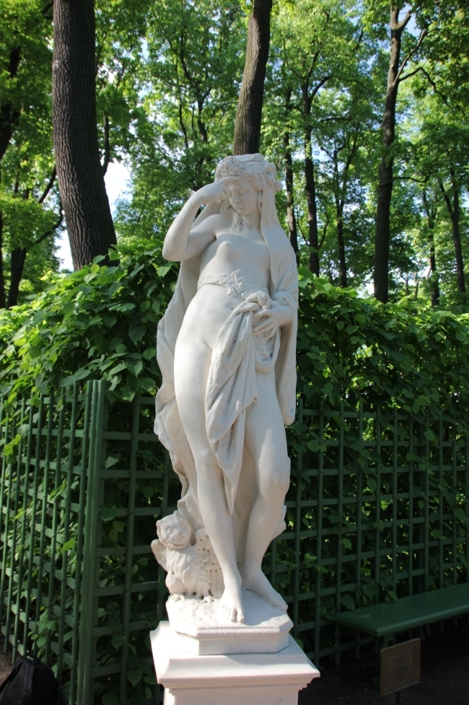
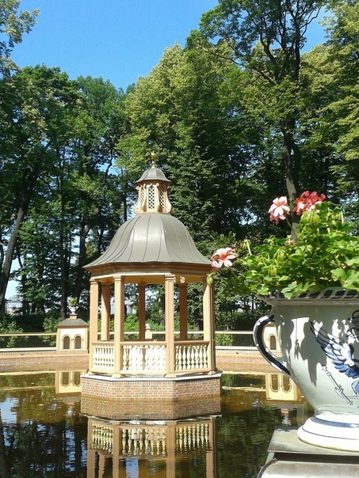
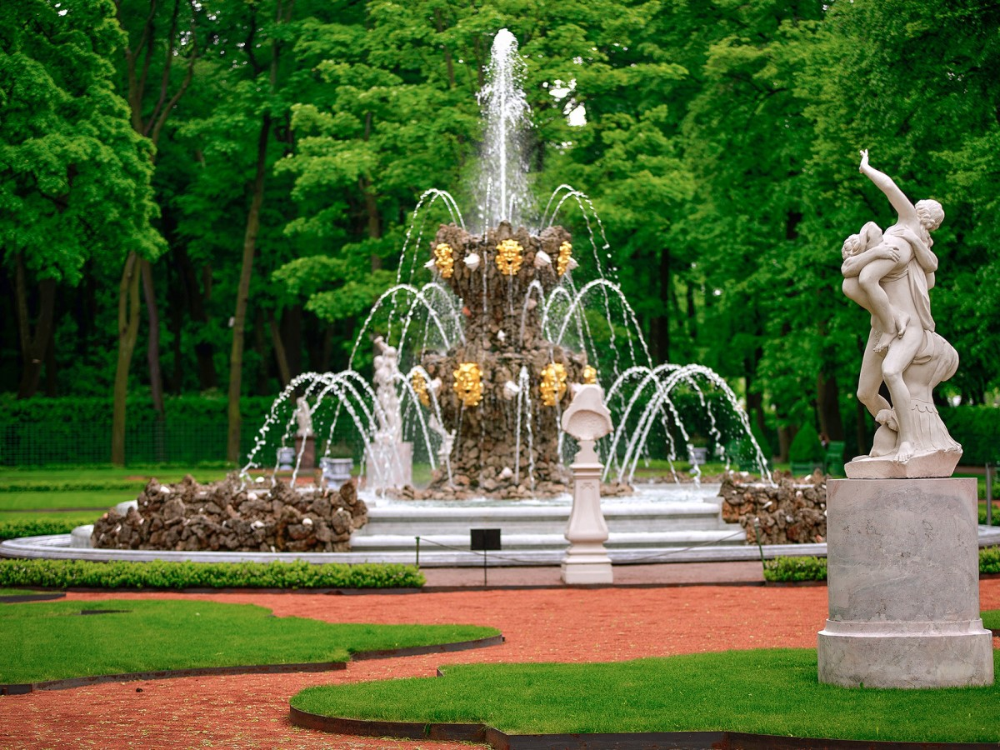
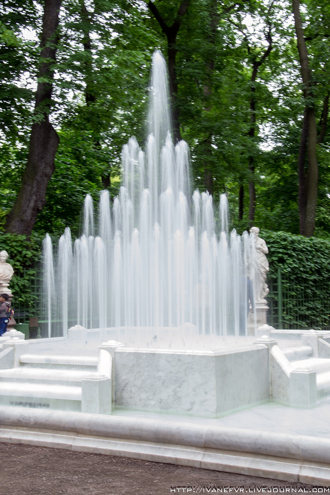
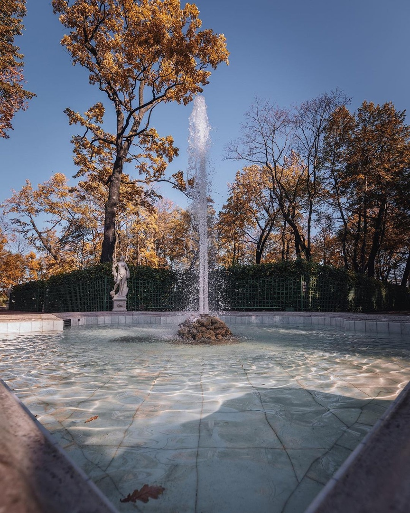
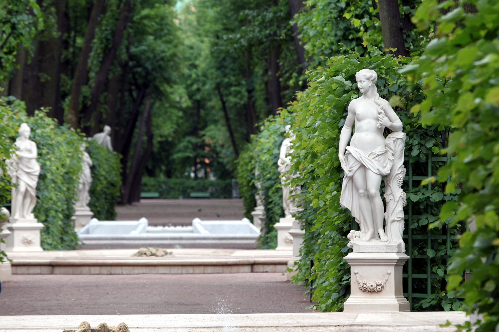

В начале 18 века, в разгар продолжающейся Северной войны Петр Первый строит новый город с Адмиралтейством, с дворцами и парками. На небольшом островке между Невой, Фонтанкой, Мойкой, а позднее и прорытой в 1711 году Лебяжьей канавкой по инициативе Петра начала формироваться территория Летнего сада. Это был пробный опыт создания подобного ландшафтного пространства в России. И опыт вполне удачный!
Мечту императора о версальском саде воплощала в жизнь большая группа архитекторов (И.Матвеев, М.Земцов и другие), художников, садовников при непосредственном руководстве мастера Ивана Угрюмова. Здесь работало множество крепостных и вольнонаемных рабочих. Тоннами завозилась земля, высаживались деревья и кустарники, проводились и облагораживались дорожки. Приглашенные садовники были то голландцами, то французами, поэтому сад формировался то в голландском, то во французском стиле.
Первый проект будущего сада с архитектурным его запланированным делением на ровные аллеи, с четкой организацией посадок из деревьев и кустарников, Петр нарисовал сам еще в 1704 году. По его задумке этот парк должен был стать культурным городским местом отдыха, но с элементами загородной усадьбы. Для контроля за ведущимися работами и для летнего семейного проживания в формирующемся саду строится Летний дворец Петра Первого (1711-1714 гг).
Сад был разбит на отдельные части параллельными и перпендикулярными дорожками. Часть сада, находящаяся ближе к Летнему дворцу называлась Первым Летним садом (Парадным), более южная его территория до Мойки – Вторым (Красным или Хозяйственным). А садовая часть за Мойкой – это уже был Третий Летний сад (Сад ее Величества) – подарок Петра своей супруге - сегодня Михайловский, по названию находящегося там замка. В 1719 году между Первым и Вторым садами был прорыт Поперечный канал, засыпанный после наводнения 1777 года.
В Летнем саду петровского периода было посажено множество дубов, вязов, кленов, рябин, елей и т.д. В Хозяйственной части были высажены фруктовые деревья и кустарники, между которыми высевались пряные травы, употребляемые в пищу.

В Летнем саду петровского периода было посажено множество дубов, вязов, кленов, рябин, елей и т.д. В Хозяйственной части были высажены фруктовые деревья и кустарники, между которыми высевались пряные травы, употребляемые в пищу.
С 1725 года архитектурными работами в Летнем саду руководил придворный императорский архитектор Ф.Растрелли, который за время своей деятельности кроме всего прочего построил Летний дворец Анны Иоанновны, создал фонтанный каскад «Амфитеатр» с центральным «Коронным» фонтаном.
Во времена Петра Первого вход в Летний сад был разрешен только по особым пригласительным билетам, позже вход стал доступен только для знатной публики. А уже к 19 веку Летний сад становится излюбленным местом прогулок горожан, конечно же, кроме низших слоев общества. Здесь любил гулять и А.Пушкин, а в его известном романе маленького Евгения Онегина водил гулять в Летний сад француз-гувернер.
По аллеям сада не раз хаживали Жуковский и Крылов, Чайковский и Гончаров, Блок и Ахматова…В этом саду любили проводить вечера влюбленные. А еще здесь проводился негласный конкурс невест купеческого сословия. Купчихи со своими разодетыми дочками на выданье задерживались на центральных парковых аллеях, чтобы потенциальные женихи могли получше их рассмотреть.
В советские годы Летний сад был запущен. К жизни его вернула реконструкция начала 21 столетия. Для поддержания Летнего сада в надлежащем виде, в нем и сегодня идут постоянные работы по реставрации, восстановлению и сохранению архитектурных и прочих достопримечательностей. Также ведется неусыпный контроль за состоянием деревьев - больные лечатся, засохшие удаляются, новые высаживаются.
Летний сад задумывался Петром I как сад фонтанов, поэтому не удивительно, что они стали в итоге одним из существенных элементов садового ансамбля. Без них он не мыслил настоящего сада, способного соперничать по своей красоте со знаменитыми парками Версаля. Поэтому, намечая план «огороду», одно из первостепенных мест он отвёл сооружению системы фонтанов. Уже в 1705 году царь приказал зодчему И. М. Угрюмову (Матвееву) «учинить приготовление свай, колёса великого… також двух с пальцами и несколько шестернёй», поясняя, что «сие надобно для возведения воды к фонтанам».

После смерти Угрюмова в 1707 году строительство фонтанов продолжали приглашённые из Европы архитекторы Яган Кинтлер, Х. ван Болос. В 1725 году фонтанов в саду было 20, а к 1736 году — свыше 50. Некоторые фонтаны были украшены свинцовыми позолоченными группами, в основном — сценами из басен Эзопа. Первоначально, снабжавший фонтаны водоподъёмный механизм работал на конной тяге. В 1718 году он был заменён первой в России «огнедействующей машиной» в виде паро-атмосферного насоса конструкции французского инженера Т. Дезагюлье (Desaguliers, Theophile, 1683—1743). Этот насос, приобретённый по заказу Петра I в 1717—1718 годах в Англии, был установлен в одном из помещений грота.
В 1718—1721 годах по проекту Г. Г. Скорнякова-Писарева для питания фонтанов Летнего сада и снабжения города питьевой водой был прорыт Лиговский канал. Канал являлся реализацией сложной для своего времени градостроительной задачи по созданию городского водовода. Канал начинался на юго-западе Петербурга у реки Лиги (ныне река Дудергофка), вытекающей из Дудергофского озера, находящегося на 24 метра выше уровня территории Летнего сада и заканчивался искусственным бассейном на углу современной улицы Некрасова (бывшая Бассейная улица) и Греческого проспекта.
От бассейна в 1725—1727 годах были проложены трубы к фонтанам Летнего сада, они пересекали реку Фонтанку по деревянному мосту-акведуку, построенному мастером X. ван Болесом, и расположенному на месте нынешнего Пантелеймоновского моста. В 1748—1749 его заменили новым акведуком в стиле барокко по проекту архитектора Ф. Б. Растрелли. Акведук был пышно украшен лепкой, и даже линии арок были вырезными.
Камер-юнкер герцога Голштинского Фридрих-Вильгельм Бергхольц в своём дневнике так описывает фонтаны Летнего сада в 1721 году: «От этой галереи начинается самая широкая аллея, в которой устроены красивые высоко бьющие фонтаны. Вода для них накачивается большою колесною машиною из канала в особые бассейны и потому её всегда достаточно. У первого фонтана — место, где обыкновенно бывает царица со своими дамами, а у следующего стоят три или четыре стола, за которыми пьют и курят табак. Это место царя. Вправо от этой площадки стоит прекрасная статуя с покрытым лицом, у подножия которой течёт или, вернее сказать, бьёт вода во все стороны… против птичника устроен фонтан в виде вызолоченного каскада, украшенный множеством вызолоченных сосудов…».
Большой участок Второго Летнего сада занимал Лабиринт, на дорожках которого были поставлены фонтаны со свинцовыми позолоченными скульптурными группами на сюжеты басен Эзопа. Значительные работы по сооружению фонтанов Второго Летнего сада выполнил Б. К. Растрелли. «Я велел вырыть пруд большого протяжения, расположенный близ дворца, принадлежащего к новому саду, где я устроил также большой лабиринт из зелени, состоящий из липовых аллей с изгородями из различных деревьев, местами украшенных барельефами позолоченными, с вазами, с взлетающими струями воды; вокруг этого большого бассейна было помещено несколько мраморных статуй… в новом саду выстроил по приказу императрицы большое ванное здание с большим залом, покрытым куполом, с большим фонтаном из многих струй…».

Почти все водомёты, находившиеся на территории сада, когда-то имели свои названия. До нас дошли менее десяти имён: «Царицын» фонтан, «Гербовый», «Пирамида», «Коронный», «Яблошный», «Фаворит» и «Лакоста». Сюда же можно отнести каскады «Дельфиновый» и «Амфитеатр».
Фонтан «Царицын», располагавшийся на первой площадке от Невы по Центральной аллее, был назван в честь Екатерины I. Здесь императрица обыкновенно встречала гостей, прибывавших в сад со стороны Невы.
Фонтан «Гербовый», находившийся на второй площадке, получил своё название от резных двуглавых орлов, красовавшихся в центре водомёта. Гербы из дуба, выполненные «резного дела мастером» Кондратом Ганом, в 1721 году были инкрустированы заморскими раковинами.
Фонтан «Пирамида» располагался на четвёртой площадке по главной аллее. Когда-то на этом месте находился квадратный фонтан, однако, Екатерина I пожелала видеть здесь пирамиду. «Чертёж фантаны четверогранной… переделать, чтоб была наподобие пирамиды»,— гласил её указ. Возможно, фонтан «Пирамида» в Летнем саду был точной копией одноимённого петергофского.
Фонтан «Коронный», располагавшийся перед прежним входом в Летний сад со стороны Потешного луга (ныне — Марсово поле), был многоструйным. Своё поистине королевское название он получил по форме струй, образующих похожую на корону композицию.
«Яблоневый» или «Яблошный» фонтан, находившийся в Фабульной роще во втором Летнем саду, по всей видимости, был представлен в виде ветвей яблони, через которые били струи.
Название фонтана «Фараон» — одно из самых неожиданных для Летнего сада. Судя по описи 1824 года, такой водомёт стоял в гроте и был демонтирован в 1781 году. Он представлял собой «фонтанную свинцовую фигуру… Фараона с воинством».
Фонтан «Нарцисс» можно отнести к малоизвестным водомётам Летнего сада. Он находился в Дубовой роще, ныне не существующей, недалеко от дворца Петра I. Водомёт украшала статуя сидящего Нарцисса, который задумчиво вглядывался в фонтанную чашу.
Упоминание о фонтане «Тюленевый» мы встречаем в записках Ф. В. Бергхольца (F.W. Bergholtz), видевшего в 1723 году в бассейне водомёта «живого тюленя». Об этом же сообщается и в частном письме полкового писаря Савицкого, датированном 5 июня 1718 года: Пётр I в день своего рождения 30 мая водил гостей по Летнему саду, где, между прочим, показывал «фонтаны и в них плавающих дивных морских животных».

В Летнем саду нередко повторялись петергофские фонтаны. В 1725 году в Петергофе был открыт одноструйный круглый фонтан «Фаворитка», шутки ради названный в честь любимой собачки Екатерины I. Специальная водяная турбина приводила в движение горизонтальное колесо, на котором друг за другом сидели четыре медные уточки и собачка, безуспешно «догонявшая» птиц. При этом, как пишут очевидцы, собачка натурально «брехала», а утки «крякали». Екатерина была в восторге от такой забавы и тотчас распорядилась устроить подобный в Летнем саду. В следующем 1728 году фонтан был построен и занял своё место в южном боскете перед павильоном «Грот». В описи сада 1736 года упоминается и «Фаворит»: «От грота по обеим сторонам дороги две брусчатые огибные, одна в Фаворит… другая к новому фонтану Лакоста, который ещё недоделан».
Упоминаемый в документе фонтан «Лакоста» можно назвать фонтаном-спутником «Фаворита». Он располагался симметрично фонтану «Фаворит», в центре правого «зелёного кабинета».
Фонтаны и система их водоснабжения были разрушены катастрофическим наводнением 21 сентября 1777 года. Екатерина II приняла решение не восстанавливать их.
В рамках I этапа реконструкции и капитального ремонта Летнего сада (2009—2011 гг.) на основании данных археологических раскопок были воссозданы 8 фонтанов. Девятый фонтан «Лакоста» — музеефицирован.

Основная часть коллекции — мраморные скульптуры итальянских мастеров конца XVII — начала XVIII вв. Приобретением скульптур в Италии в начале XVIII века занимались доверенные лица Петра I, знатоки искусства граф Савва Рагузинский-Владиславич и Юрий Кологривов. Уже в 1710 году в саду насчитывалось около тридцати статуй и бюстов. В последующие годы количество их увеличивалось и к 1728 году достигло уже более ста. Многие скульптурные произведения подписаны их исполнителями.
В коллекции представлены работы итальянских скульпторов Пьетро Баратта (P. Baratta) (1668—1729): скульптурная группа «Мир и Победа. Аллегория Ништадтского мира» (1725), статуи «Аллегория архитектуры» (около 1722), «Аллегория милосердия» (1717), «Аллегория мореплавания» (до 1722), «Аллегория правосудия» (1719), «Слава» (около 1718), бюсты «Александр Македонский» (около 1720), «Аллегория изобилия» (нач. XVIII в.), «Аллегория мира» («Женщина в диадеме») (около 1719), «Аллегория осени (Вакх)» (около 1717), «Аллегория солнца (Аполлон)» (около 1717), «Камилла» (нач. XVIII в.), «Молодая женщина (римлянка)» (нач. XVIII в.), «Флора» (нач. XVIII в.), «Юноша» (нач. XVIII в.); Джованни Бернини (G. Bernini) (1598—1680), школа: скульптурная группа «Амур и Психея» (конец XVII в.); Джованни Бонацца (G. Banazza) (1654—1736): статуи «Аврора» (1717), «Закат» (1717), «Ночь» (1717), «Полдень» (1717), «Сивилла Дельфийская» (1719); Джузеппе Гроппелли/Гропелли (G. Groppelli) (1675—1735) и Паоло Гроппелли/Гропелли (P. Groppelli) (1677—1751): статуи «Нимфа воздуха» (около 1717), «Талия» (около 1719), «Терпсихора» (около 1722), «Эвтерпа» (около 1722); Марино Гроппелли/Гропелли (M. Groppelli) (1662—1728): статуи «Аллегория искренности» (1717), «Аллегория истины» (1717); Джованни Дзордзони/Зорзони (G.Zorzoni) (1663—1741): статуи «Аллегория красоты» (около 1719), «Сивилла Европейская» (1717), «Сивилла Ливийская» (1717); Антонио Коррадини (A. Corradini) (1668—1752): статуя «Нереида» (около 1717), бюсты «Петрония Прима» (1717), «Скрибония» (нач. XVIII в.); Орацио Маринали (O. Marinali) (1643—1720): бюсты «Аполлон» (около 1717), «Аристотель» (нач. XVIII в.), «Гераклит» (нач. XVIII в.), «Демокрит» (нач. XVIII в.), «Диоген» (нач. XVIII в.), «Марс» (около 1717), «Сенека» (нач. XVIII в.), «Царь Мидас» (нач. XVIII в.), «Эскулап» (нач. XVIII в.); Бортоло Модоло (B. Modolo) (около 1681—?): бюсты «Сивилла Самосская» (нач. XVIII в.), «Сивилла Эритрейская» (около 1717); Франческо Пенсо (Кабьянка/Кабианка) (F. Penso Cabianca) (1665—1737): статуи «Антиной» (1722), «Вертумн» (1717), «Помона» (1717), «Сатурн» (1716), бюсты «Веспасиан» (около 1717), «Марция Фурнилла» (около 1716), «Нерон» (нач. XVIII в.), «Тиберий» (около 1717), «Тит» (около 1717), «Траян» (нач. XVIII в.); Альвизе Тальяпьетра (A. Tagliapietra) (1670—1747): статуя «Беллона» (около 1718); Антонио Тарсиа (A. Tarsia) (1662—1739): статуи «Немезида» (1716), «Рок» (около 1716), «Юность» (около 1722), бюст «Аллегория дня» (нач. XVIII в.); Паоло Трискорни (P. Triscornia) (1757—1833): статуи «Аполлон» (около 1800), «Диана» (XVIII в.), фламандского скульптора Томаса Квеллинуса (T. Quellinus) (1661—1709): статуи «Минерва» (1690-е), «Нимфа Летнего сада» (1690-е), «Церера» (1690-е), немецкого скульптора Генриха Мейринга (Heinrich Meyring) (1628—1723): статуя «Флора» (1717), а также ряд работ неизвестных скульпторов конца XVII — начала XVIII века.
В 1720 году в галерее на берегу Невы была установлена античная статуя Венеры, выполненная неизвестным италийским скульптором во II или III веке до н. э. с греческого оригинала Афродиты Книдской или Венеры Капитолийской. Статуя была найдена при раскопках в Италии в 1719 году и подарена Петру I папой римским Климентом XI. Превосходная по качеству исполнения скульптура привлекала в XVIII веке особое внимание посетителей Летнего сада как одна из главных его достопримечательностей. Теперь эта статуя, которая называется «Венера Таврическая», находится в собрании Государственного Эрмитажа.
Скульптурное убранство Летнего сада в XVIII веке дополняли многочисленные, главным образом свинцовые, позолоченные изваяния, украшавшие его фонтаны, впоследствии утраченные.
По тематике скульптуру Летнего сада можно разделить на три большие группы: исторического, аллегорического и мифологического содержания. Среди них имеются отдельные небольшие серии, связанные единством содержания: такова серия, изображающая различное время суток, аллегорические статуи, олицетворяющие науки и искусства, и т. п. Интересны скульптурные портреты исторических деятелей — Александра Македонского, Марка Аврелия, польского короля Яна Собесского, а также статуи, аллегорически изображающие Архитектуру, Славу, Мореплавание, Правосудие и персонажей античной мифологии — Минерву, Беллону, Немезиду, Эвтерпу, Флору, Меркурия, Вакха и др. Некоторые являются подражанием античным оригиналам.
В 1974 г. во время археологических раскопок в районе хозяйственного двора в земле была найдена мраморная герма «Вакх» (неизвестный скульптор, Италия, XVIII в.).
На сегодняшний день коллекция оригиналов мраморной скульптуры Летнего сада состоит из 92 единиц хранения (38 статуй, 5 скульптурных групп, 48 бюстов и 1 гермы), которые после капитальной реставрации, в основном, хранятся в залах Инженерного (Михайловского) замка (90 единиц хранения). Оригинал Пьетро Баратта «Мир и Победа» (Ништадтский мир) (1725) после полной реставрации находится на своём историческом месте в Летнем саду между Летним дворцом Петра I и рекой Невой. Герма «Вакх» не проходила реставрацию и в настоящее время находится в павильоне «Голубятня» боскета «Птичий двор» Летнего сада. Этот памятник является экспонатом постоянно действующей выставки.